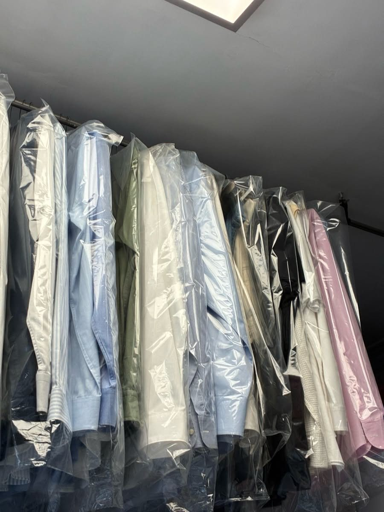

접수 조회
접수 조회는 접수번호와 전화번호 뒷자리로 맡긴 옷이 어느 단계에 있는지 보여 줍니다.
번호로 찾기
예시 번호
- 뒷자리 4417
- 뒷자리 2093
- 뒷자리 3301

접수
- 1접수
- 2검수
- 3세탁
- 4다림
- 5검품
- 6찾을 수 있음
접수 기록은 지어낸 것이다. 예시 번호 셋을 포함해 8건이 들어 있다.
05 / 12월~금 07:30~21:00토 09:00~18:00일요일·공휴일 휴무
접수 조회는 접수번호와 전화번호 뒷자리로 맡긴 옷이 어느 단계에 있는지 보여 줍니다.

접수 기록은 지어낸 것이다. 예시 번호 셋을 포함해 8건이 들어 있다.